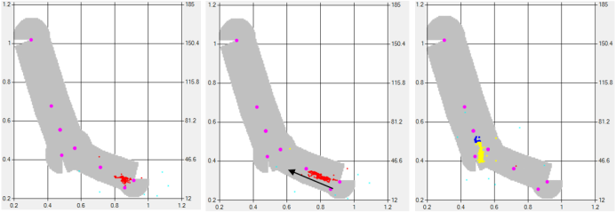
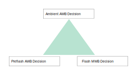
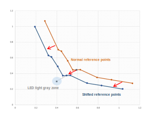
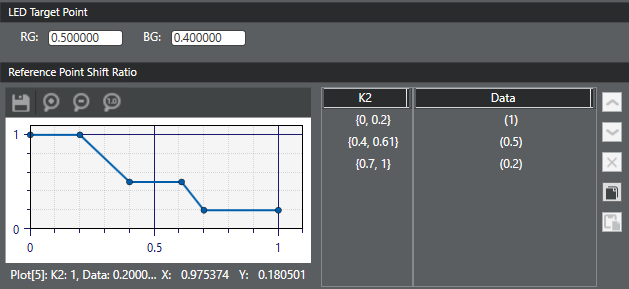
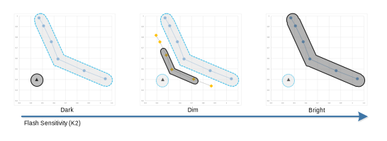
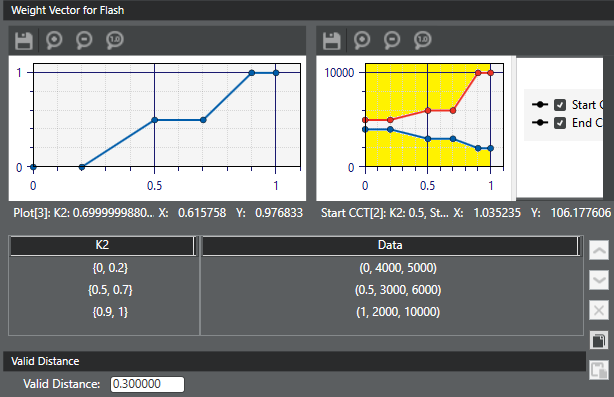
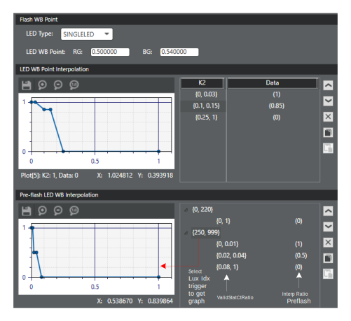
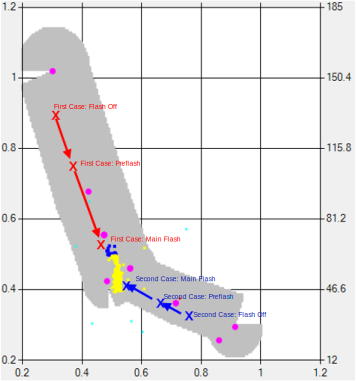
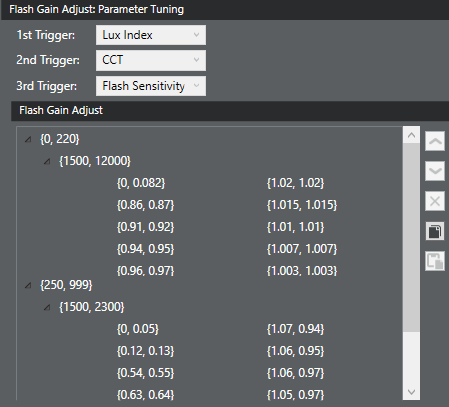
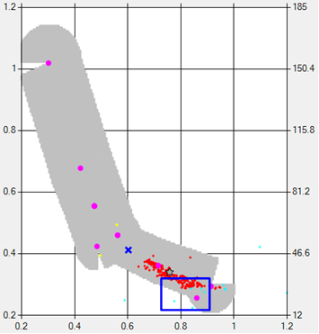

- Flash-only light condition (very dark condition)
- Mixed lighting condition: Flash light + other illuminants (dim and/or normal light conditions)
Under mixed lighting conditions, input stats of the given scene are located in various regions of the gray zone. LED flash processing considers the influence of the flash light. The luminous flash influence on a scene, referred to as Flash Sensitivity or K2, is computed by AEC processing.

Tuning parameters in stat filters are typically optimized for normal scenes. When there are mixed light conditions with flash, LED flash processing adjusts the stat filter tuning parameters with respect to flash sensitivity, including mixing the different AWB decisions.

- Flash Reference Point – Updates gray zone with respect to flash light influence
- Flash Weight Vector – Updates stat weight with respect to flash light influence
- Flash Decision – Combines AWB decisions and special gains with respect to flash light influence
- Flash Gain Adjust – Compensates for varying influence of flash induced by ambient lights of different CCT
Flash reference point submodule
LED light strength can affect the normal gray zone configuration, especially the gray zone location, because the LED light is an additional illuminant source. The effect of flash sensitivity is to shift the normal gray zone toward the R/G and B/G point of the LED light as shown in the following figure:

- Flash gray zone – LED light under a totally dark environment; around the R/G and B/G point of LED light
- Normal gray zone – LED light under a bright environment
- Shifted gray zone – LED light under a dim environment; between flash gray zone and normal gray zone
Use the Chromatix user interface to define the amount of shift (Ref Points Shift Ratio) in the original AWB reference points towards the LED target point by setting user-defined flash sensitivity trigger zones, as illustrated in the following example:
Flash weight vector submodule
As shown in the following figure, the LED flash process constructs the three
gray zones so that it can reject nongray stats effectively in all conditions: in
dark conditions, in dim conditions in which LED light and ambient lights are mixed,
and in bright conditions. The dim gray zone illustrates how a CCT restriction can
reduce the size of the gray zone.

To define the dark condition gray zone, specify the gray zone distance (Valid Distance) when the flash light source is dominant (Flash Sensitivity = 0).

The flash weight vector submodule reshapes the reconstructed dim condition gray zone using a user-provided weight vector adjustment and CCT range. Given an input stat, the flash weight vector interpolation ratio makes further adjustments to the weights assigned by the illuminant and distance weight vector stat filters. In addition, the CCT start/end range restricts the reconstructed gray zone. If the CCT of the input stat is out-of-range, the weight for this stat is set to zero.
Use the Chromatix 7 user interface to define the weight vector interpolation ratio (Red) and CCT start (Green) and CCT end (Blue) values for each user-defined flash sensitivity trigger zone, as illustrated in the following example. The CCT out-of-range area is shaded yellow for the purpose of the example.
Flash decision submodule
- The preflash AWB decision.
- The main flash MWB decision (Main Flash Pt).
- The ambient AWB decision (the AWB decision just before turning on preflash).
- The flash sensitivity (K2):
- If K2 is close to 100 (bright condition), the preflash AWB decision is ignored because the flash light has little influence.
- If K2 is close to 100, the ambient AWB decision is more reliable than the MWB decision.
- If K2 is close to 0 (strong influence from the flash light source), the MWB decision is more reliable than the ambient AWB decision.
- The percentage of valid gray stats in the preflash AWB decision estimation:
- The percentage determines the confidence level for the preflash AWB decision estimate.
- If the percentage of valid gray stats is low in the preflash period, there is less confidence in the preflash AWB decision, so the MWB decision is a better choice for the estimation.
- If there is a high percentage of valid gray stats in the preflash period, there is more confidence in the preflash AWB decision.
- Interpolate the ambient AWB decision and the MWB decision using this equation: [Interp Ratio LED Pt * Main Flash Pt] + [(1-Interp Ratio LED Pt) * ambient AWB decision point].
- Interpolation of the preflash AWB decision and the result of the first step using this equation: [Interp Ratio Preflash * decision point from step 1] + [(1-Interp Ratio Preflash) * preflash AWB decision point].

As illustrated in the following example, use the Chromatix 7 user interface to specify the main flash MWB rg and bg gains (Flash WB Point) and the LED Type (single or dual) as shown in the Flash WB Point area. Use the LED WB Point Interpolation area to define the LED point interpolation ratio for each user-defined flash sensitivity trigger zone. Use the Pre-flash LED WB Interpolation panel to define the pre-flash interpolation ratio for each two-level trigger zone based on Lux Index (first column) and Valid Stats Cnt Ratio (second column).

Flash gain adjust submodule
The flash AWB decision is calculated by the preflash AWB decision because the main flash period is not enough long to estimate an AWB decision. However, due to reducing power consumption, the light intensity in the preflash period is lower than that in the main flash period. Therefore, the estimated flash AWB decision from the preflash AWB decision should be adjusted to compensate for influences from other light intensities.
The Flash Gain Adjust compensates for differences in the influence of flash light induced by ambient lights with different color temperatures, despite having the same flash sensitivity. As shown in the following figure, the color temperature of ambient light of the first case (red line) is farther from the flash gray zone (yellow dots) than that of the second case (blue line). Thus, the color temperature of the ambient AWB decision is an important trigger to set up for assigning gain adjust values.
As illustrated in the following example, use the Chromatix 7 user interface to assign the Flash Gain Adjust rg and bg values for a three-level trigger based on Lux Index (first column), CCT (second column), and Flash Sensitivity (third column). If needed, using the three trigger levels, it is possible to set up a scenario where normal outdoor conditions only use the Flash Sensitivity trigger, and indoor conditions use both CCT and Flash Sensitivity triggers.
MLC zones adjustment
Because the gray zone can vary with respect to flash sensitivity, some misleading color zones may need to move along with the moving gray zone. In addition, new MLC zones may be required. To evaluate which MLC changes are necessary, evaluate using Flash Sensitivity as a trigger in the Misleading color zones concept section.
